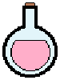
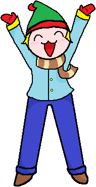
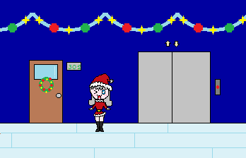

Existem diversos tipos de itens com diferentes funções, todos eles indicados abaixo. Os itens podem ser adquiridos de dois modos diferentes, esses são:
- Comprando no NPC da Loja usando alguma das moedas do jogo(explicado no topico ‘Moedas do Jogo’)
- Adquirido por cumprir uma missão de algum NPC Aleatorio ou completando os desafios de um Professor.
Consumíveis
|  |
Eles lhe darão algum tipo de beneficio durante a execução dos desafios de um professor. E serão apagados do inventario após usa-los. Ex: Mais uma vida, congelar o tempo, etc. |
Animações
|
São todas as animações presenciadas durante o jogo, você já deverá tê-las presenciado para poder possui-las. Elas são armazenadas na Videoteca. Ex: Animação de Introdução. |
Skins
|  |
São os itens que modificarão a aparência do personagem, como os seus cabelos, pele e roupas, baseados em diferentes temas. Ex: Zumbi, Pirata, etc. |
Temas
|  |
São itens modificadores do estilo dos corredores do colégio, alterando o ambiente da escola de acordo com o escolhido. Ex: Natal, Verão, etc. |